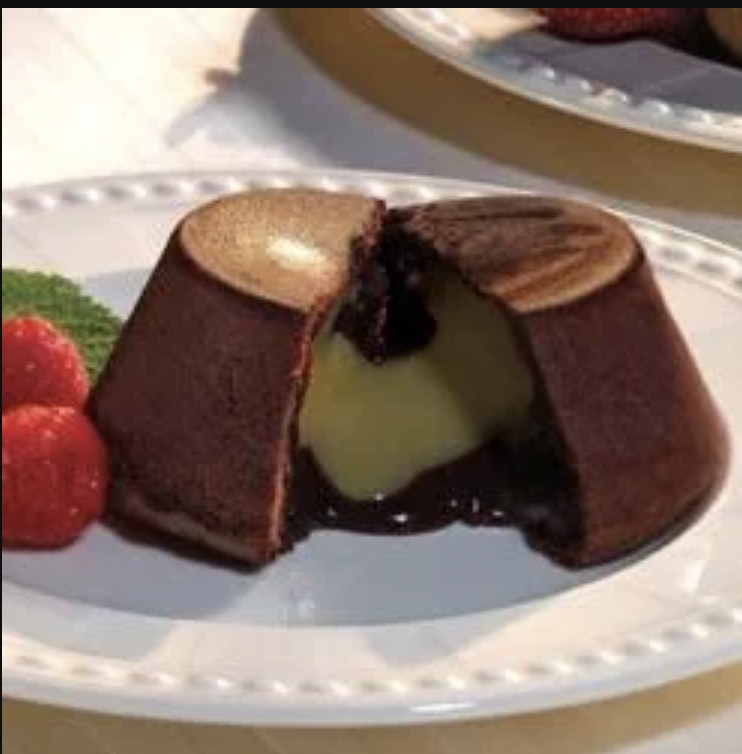

Chocolat Fondant A La Maille

Description :
Ingredients :
- 9 ounces 70% cocoa dark chocolate
- 1 ½ sticks butter
- 1 ¼ tablespoons rice flour
- 1 ¼ tablespoons powdered cocoa
- 8 eggs, separated
- ½ cup sugar
- ½ cup Maille Honey Dijon Mustard
- ½ cup whipping cream
Steps :
- Mix the whipping cream and Maille® Honey mustard. Pour into cube shaped silicone molds and freeze until solid. Melt chocolate and butter in double boiler. Mix egg yolks with flour and cocoa. Pour melted chocolate and butter into egg mixture and stir.
- Beat egg whites until bubbly, and then add sugar. Blend egg whites into chocolate mix.
- Line molds (3" high, 3" diameter) with greased wax paper. Fill with chocolate mixture. Place a frozen cube in center and cover with chocolate mix. Bake at 350 degrees for 7 minutes. Cool, remove from mold and serve.